Intro to Numerical Data, Continuing Intro to R
Overview
Week: 2Reading
This weeks topics cover remaining parts of OIS 1.1, 1.2, 1.3, 2.1; OIS 1.4 & 2.3 (we won’t cover 2.3 yet, but will cover the concepts presented here later in the class so feel free to read it over now).
We will also cover ITR 1, 2, 5, 6, 7, 12 (ITR can be skimmed or read in depth depending on comfort level with coding)
Questions
How can we analyze numerical data?
TBD
Objectives
TBD
Summary statistics and histograms with data in R
Review
Last time we talked about some summary statistics and how to calculate them for data that is made up of numbers:
- the mean is the sum of all data values divided by the number of data points
- the median can be thought of as the “middle” number that splits the data into two halves if we order numerical data from smallest to largest
- the standard deviaion is the square root of something called the varience which is roughly the average distnace of data values from the mean
- the first/third quartiles delinate where 25% of the data falls below (first) and above (third) if we ordered the data from smallest to largest (the median is like the 50% or second quartile)
Let’s do some analysis with “fake” class data showing programming histories of students in the class.
classData = read.csv("data/formatted_class_answers.csv", stringsAsFactors=T)
# note: this is a placeholder for real data
Make sure this file is stored somewhere you can remember! You can put it in the same directory as this file (or whatever R-script you are working from) or you can specify a location. For example, on my Mac I can specify the default Downloads folder as the location with:
classData = read.csv("~/Downloads/formatted_class_answers.csv", stringsAsFactors=T)
What is in this dataset?
classData
X familiarity.with.stats programming.language time.programming
1 1 3 R < 6 months
2 2 3 R Between 6 months to 1 year
3 3 2 Python < 6 months
4 4 3 Python Between 6 months to 1 year
5 5 3 Python < 6 months
6 6 2 Python < 6 months
7 8 2 C/C++ 2-4 years
8 7 2 Shell 1-2 years
9 9 3 python Between 6 months to 1 year
10 10 3 python 1-2 years
11 11 3 Python 2-4 years
12 12 3 Python < 6 months
13 13 2 JavaScript > 4 years
14 14 2 Python Between 6 months to 1 year
15 15 2 SQL Between 6 months to 1 year
What are the names of the columns?
colnames(classData)
[1] "X" "familiarity.with.stats" "programming.language"
[4] "time.programming"
Let’s make a vector of the different languages folks use:
languages = classData[,3]
languages
[1] R R Python Python Python Python
[7] C/C++ Shell python python Python Python
[13] JavaScript Python SQL
Levels: C/C++ JavaScript python Python R Shell SQL
We can also ask for the “levels” of these catagories:
print(levels(languages))
[1] "C/C++" "JavaScript" "python" "Python" "R"
[6] "Shell" "SQL"
Let’s try making some plots of the language data.
hist(languages) # should produce an error since "languages" is NOT a count - its a bunch of strings
Error in hist.default(languages): 'x' must be numeric
Since languages is not numerical data, to make a histogram we have to play some tricks. First, let’s start by checking out the output of the table function:
table(languages) # shows how many "hits" for a specific language
languages
C/C++ JavaScript python Python R Shell SQL
1 1 2 7 2 1 1
We can try using the hist function again:
hist(table(languages)) # plots something now, but is actually counting # of bottom level, not counts
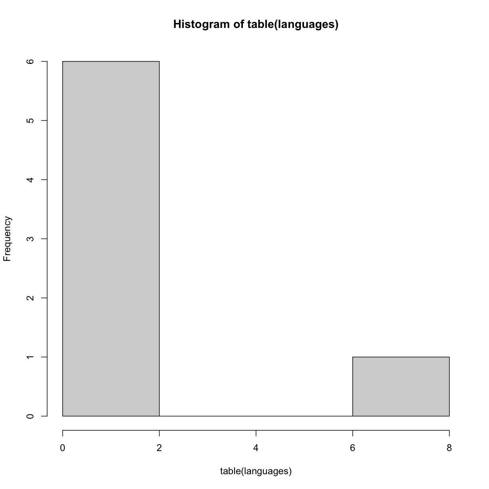
Not quite what we want, so let’s try another plotting function called barplot:
barplot(table(languages)) # which sort of does what we want
Note: there are some long strings that aren’t showing we can try changing one - for example, “python” should be “Python”:
print(levels(languages))
[1] "C/C++" "JavaScript" "python" "Python" "R"
[6] "Shell" "SQL"
We can fix this issue with some clever renaming of our levels:
print(levels(languages)[4]) # let's replace this
[1] "Python"
levels(languages)[4] = "Python" # with this
Take a look:
levels(languages)
[1] "C/C++" "JavaScript" "python" "Python" "R"
[6] "Shell" "SQL"
Let’s try replotting:
barplot(table(languages))

But what is the y axis?
barplot(table(languages),ylab='Counts')
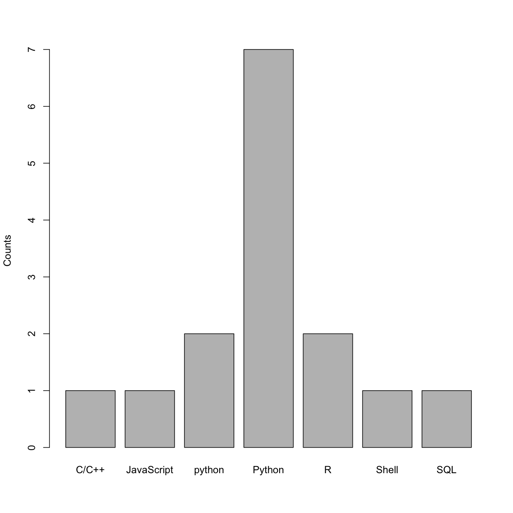
Ok, but for many languages this can be hard to see \(\rightarrow\) maybe different colors for each?
barplot(table(languages),ylab='Counts',col=c("red","blue","green","yellow","magenta"))
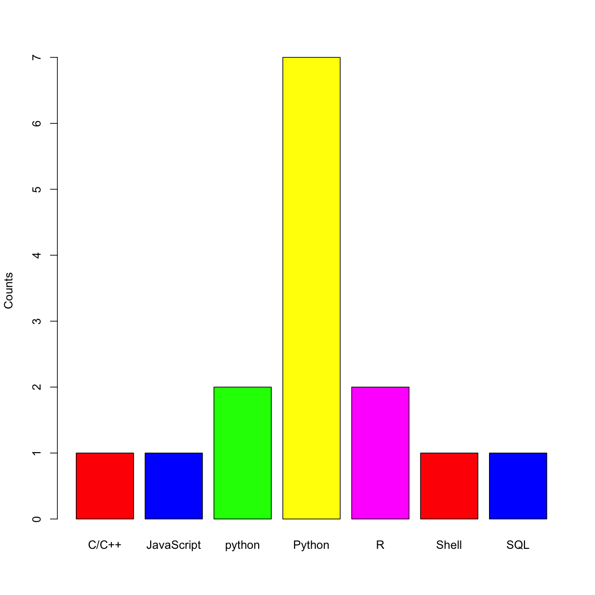
Ok cool, we see that a lot of folks use Python.
We can do the same sort of thing for the length of time folks have been coding:
time_in = classData[,4]
barplot(table(time_in))
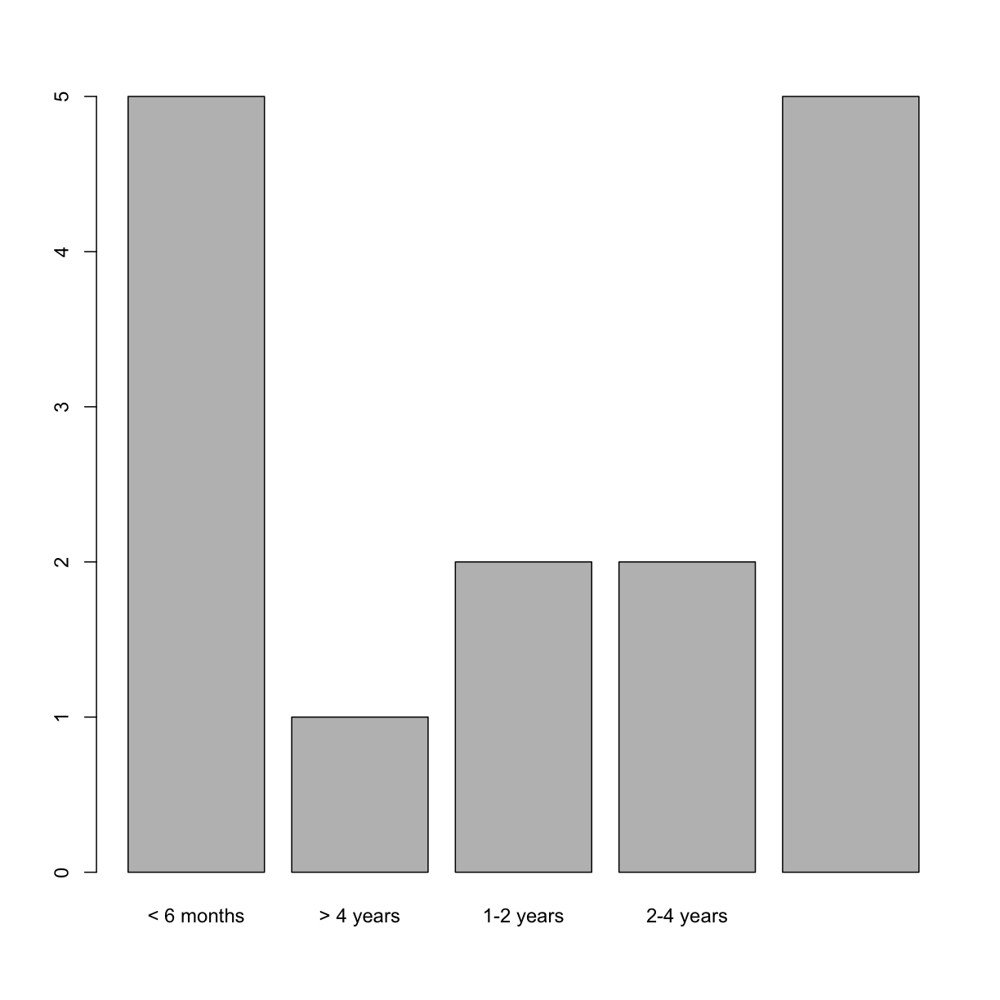 Note: In RStudio, you’ll have to expand the window to see all the labels.
Ok, so this tells us something but its hard to get a sense of the actual timescales since they are not ordered & are non-uniform increments of time.
Additionally, things are “out of order” because they don’t fall in nice ordered time bins. This is because this data is stored as “categorical” data, i.e. in this case as strings:
levels(time_in)
[1] "< 6 months" "> 4 years"
[3] "1-2 years" "2-4 years"
[5] "Between 6 months to 1 year"
Practicing for-loops and if-else statements
Let’s reformat this data a bit and get some practice with for-loops in R in the process!
time_min = c() # storage, save the min edge of our bins in years
time_max = c() # storage, save the max edge of our bins in years
Let’s look at the options again:
myLevels = levels(time_in)
print(myLevels)
[1] "< 6 months" "> 4 years"
[3] "1-2 years" "2-4 years"
[5] "Between 6 months to 1 year"
Now we get to practice doing a for-loop in R. Note, it is similar to how it’s done in Python, but there are a few differences! The syntax is generally:
for (loop_index in 1:Number_of_loops){
# DO STUFF
}
Note that this definition includes {} instead of indentations to denote what is contained in the for-loop. (if-statements are denoted similary as we’ll see below.)
Let’s do a for loop and determine bins by hand:
for (i in 1:length(time_in)){
if (time_in[i] == "< 6 months"){ # < 6 months
time_min = c(time_min,0)
time_max = c(time_max, 0.5) # in years => 0.5 years = 6 months
} else if (time_in[i] == "Between 6 months to 1 year") { # 0.5-1 years
time_min = c(time_min, 0.5)
time_max = c(time_max, 1.0)
} else if (time_in[i] == "1-2 years") { # 1-2 years
time_min = c(time_min, 1.0)
time_max = c(time_max, 2.0)
} else if (time_in[i] == "2-4 years") { # 2-4 years
time_min = c(time_min, 2.0)
time_max = c(time_max, 4.0)
} else { # otherwise, >4 years
time_min = c(time_min,4.0)
time_max = c(time_max,5.0) # just giving an arbitrary upper bound of 5 years
}
}
print(time_min)
[1] 0.0 0.5 0.0 0.5 0.0 0.0 2.0 1.0 0.5 1.0 2.0 0.0 4.0 0.5 0.5
print(time_max)
[1] 0.5 1.0 0.5 1.0 0.5 0.5 4.0 2.0 1.0 2.0 4.0 0.5 5.0 1.0 1.0
Let’s say the mid-point of this data is the time:
time = 0.5*(time_min+time_max)
hist(time)
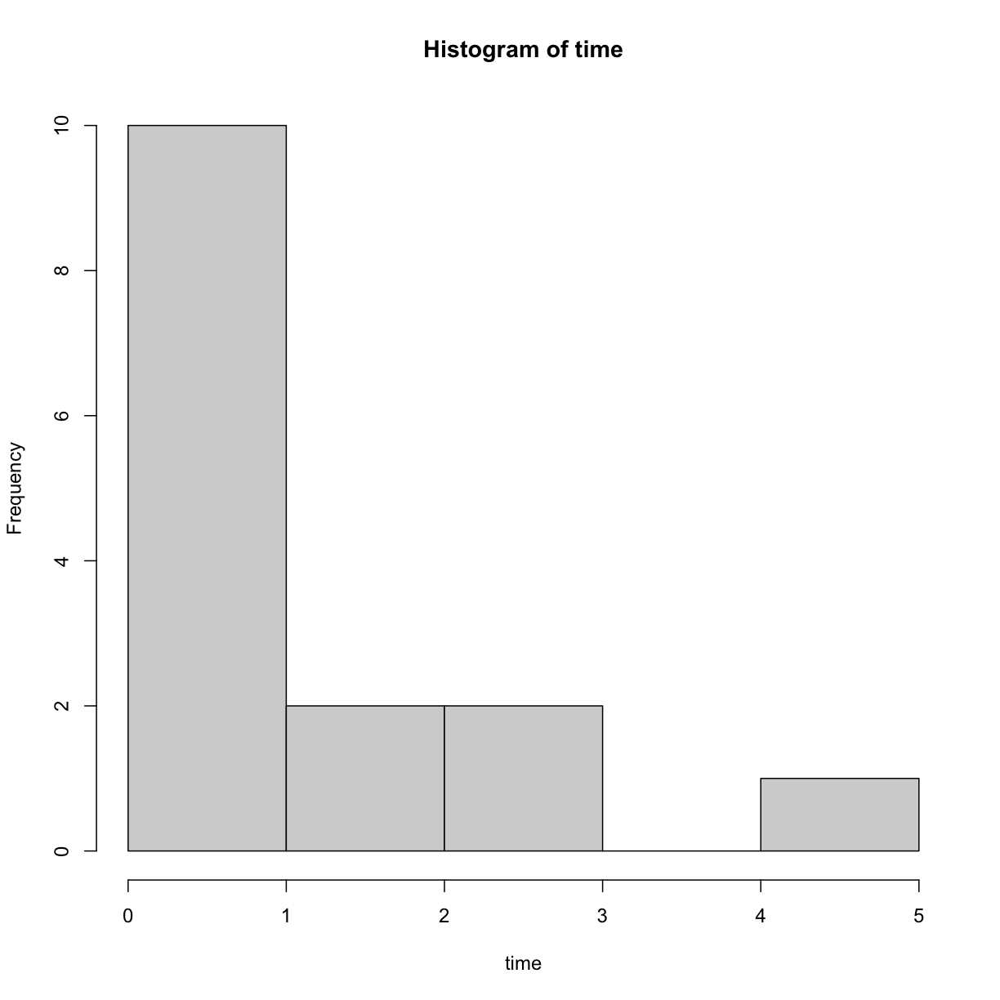
Note of course, in reality, the bins are not the same size so we can manually change the break-points to more accurately represent the data:
hist(time,breaks=c(0.0,0.5,1,2,4,5))
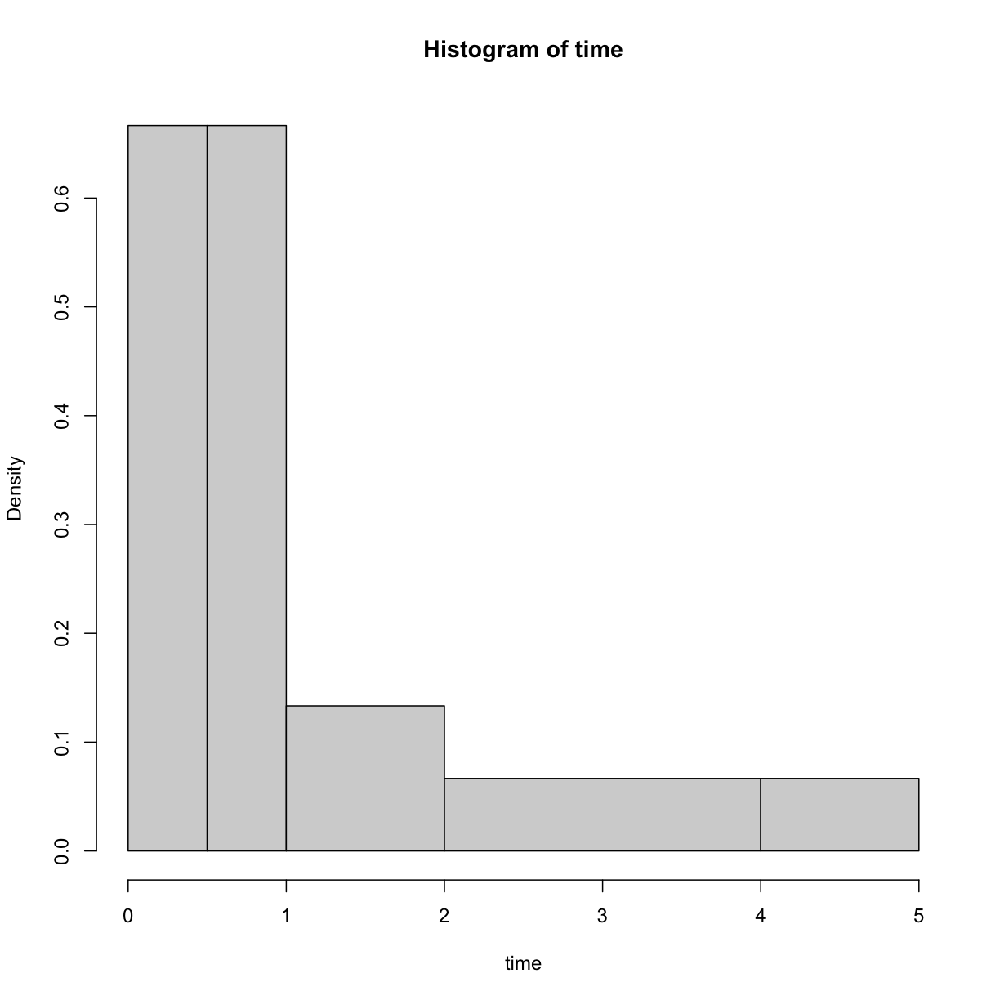
Hmmm, but that looks like density, not counts, how do we get counts?
help(hist)
hist {graphics} R Documentation Histograms
Description
The generic function
histcomputes a histogram of the given data values. Ifplot = TRUE, the resulting object of class"histogram"is plotted byplot.histogram, before it is returned.Usage
hist(x, ...) ## Default S3 method: hist(x, breaks = "Sturges", freq = NULL, probability = !freq, include.lowest = TRUE, right = TRUE, density = NULL, angle = 45, col = "lightgray", border = NULL, main = paste("Histogram of" , xname), xlim = range(breaks), ylim = NULL, xlab = xname, ylab, axes = TRUE, plot = TRUE, labels = FALSE, nclass = NULL, warn.unused = TRUE, ...)Arguments
xa vector of values for which the histogram is desired.
breaksone of:
a vector giving the breakpoints between histogram cells,
a function to compute the vector of breakpoints,
a single number giving the number of cells for the histogram,
a character string naming an algorithm to compute the number of cells (see ‘Details’),
a function to compute the number of cells.
In the last three cases the number is a suggestion only; as the breakpoints will be set to
prettyvalues, the number is limited to1e6(with a warning if it was larger). Ifbreaksis a function, thexvector is supplied to it as the only argument (and the number of breaks is only limited by the amount of available memory).freqlogical; if
TRUE, the histogram graphic is a representation of frequencies, thecountscomponent of the result; ifFALSE, probability densities, componentdensity, are plotted (so that the histogram has a total area of one). Defaults toTRUEif and only ifbreaksare equidistant (andprobabilityis not specified).probabilityan alias for
!freq, for S compatibility.include.lowestlogical; if
TRUE, anx[i]equal to thebreaksvalue will be included in the first (or last, forright = FALSE) bar. This will be ignored (with a warning) unlessbreaksis a vector.rightlogical; if
TRUE, the histogram cells are right-closed (left open) intervals.densitythe density of shading lines, in lines per inch. The default value of
NULLmeans that no shading lines are drawn. Non-positive values ofdensityalso inhibit the drawing of shading lines.anglethe slope of shading lines, given as an angle in degrees (counter-clockwise).
cola colour to be used to fill the bars. The default of
NULLyields unfilled bars.borderthe color of the border around the bars. The default is to use the standard foreground color.
main, xlab, ylabmain title and axis labels: these arguments to
title()get “smart” defaults here, e.g., the defaultylabis"Frequency"ifffreqis true.xlim, ylimthe range of x and y values with sensible defaults. Note that
xlimis not used to define the histogram (breaks), but only for plotting (whenplot = TRUE).axeslogical. If
TRUE(default), axes are draw if the plot is drawn.plotlogical. If
TRUE(default), a histogram is plotted, otherwise a list of breaks and counts is returned. In the latter case, a warning is used if (typically graphical) arguments are specified that only apply to theplot = TRUEcase.labelslogical or character string. Additionally draw labels on top of bars, if not
FALSE; seeplot.histogram.nclassnumeric (integer). For S(-PLUS) compatibility only,
nclassis equivalent tobreaksfor a scalar or character argument.warn.unusedlogical. If
plot = FALSEandwarn.unused = TRUE, a warning will be issued when graphical parameters are passed tohist.default()....further arguments and graphical parameters passed to
plot.histogramand thence totitleandaxis(ifplot = TRUE).Details
The definition of histogram differs by source (with country-specific biases). R's default with equi-spaced breaks (also the default) is to plot the counts in the cells defined by
breaks. Thus the height of a rectangle is proportional to the number of points falling into the cell, as is the area provided the breaks are equally-spaced.The default with non-equi-spaced breaks is to give a plot of area one, in which the area of the rectangles is the fraction of the data points falling in the cells.
If
right = TRUE(default), the histogram cells are intervals of the form(a, b], i.e., they include their right-hand endpoint, but not their left one, with the exception of the first cell wheninclude.lowestisTRUE.For
right = FALSE, the intervals are of the form[a, b), andinclude.lowestmeans ‘include highest’.A numerical tolerance of 1e-7 times the median bin size (for more than four bins, otherwise the median is substituted) is applied when counting entries on the edges of bins. This is not included in the reported
breaksnor in the calculation ofdensity.The default for
breaksis"Sturges": seenclass.Sturges. Other names for which algorithms are supplied are"Scott"and"FD"/"Freedman-Diaconis"(with corresponding functionsnclass.scottandnclass.FD). Case is ignored and partial matching is used. Alternatively, a function can be supplied which will compute the intended number of breaks or the actual breakpoints as a function ofx.Value
an object of class
"histogram"which is a list with components:
breaksthe n+1 cell boundaries (=
breaksif that was a vector). These are the nominal breaks, not with the boundary fuzz.countsn integers; for each cell, the number of
x[]inside.densityvalues f^(x[i]), as estimated density values. If
all(diff(breaks) == 1), they are the relative frequenciescounts/nand in general satisfy sum[i; f^(x[i]) (b[i+1]-b[i])] = 1, where b[i] =breaks[i].midsthe n cell midpoints.
xnamea character string with the actual
xargument name.equidistlogical, indicating if the distances between
breaksare all the same.References
Becker, R. A., Chambers, J. M. and Wilks, A. R. (1988) The New S Language. Wadsworth & Brooks/Cole.
Venables, W. N. and Ripley. B. D. (2002) Modern Applied Statistics with S. Springer.
See Also
nclass.Sturges,stem,density,truehistin package MASS.Typical plots with vertical bars are not histograms. Consider
barplotorplot(*, type = "h")for such bar plots.Examples
op <- par(mfrow = c(2, 2)) hist(islands) utils::str(hist(islands, col = "gray", labels = TRUE)) hist(sqrt(islands), breaks = 12, col = "lightblue", border = "pink") ##-- For non-equidistant breaks, counts should NOT be graphed unscaled: r <- hist(sqrt(islands), breaks = c(4*0:5, 10*3:5, 70, 100, 140), col = "blue1") text(r$mids, r$density, r$counts, adj = c(.5, -.5), col = "blue3") sapply(r[2:3], sum) sum(r$density * diff(r$breaks)) # == 1 lines(r, lty = 3, border = "purple") # -> lines.histogram(*) par(op) require(utils) # for str str(hist(islands, breaks = 12, plot = FALSE)) #-> 10 (~= 12) breaks str(hist(islands, breaks = c(12,20,36,80,200,1000,17000), plot = FALSE)) hist(islands, breaks = c(12,20,36,80,200,1000,17000), freq = TRUE, main = "WRONG histogram") # and warning ## Extreme outliers; the "FD" rule would take very large number of 'breaks': XXL <- c(1:9, c(-1,1)*1e300) hh <- hist(XXL, "FD") # did not work in R <= 3.4.1; now gives warning ## pretty() determines how many counts are used (platform dependently!): length(hh$breaks) ## typically 1 million -- though 1e6 was "a suggestion only" require(stats) set.seed(14) x <- rchisq(100, df = 4) ## Comparing data with a model distribution should be done with qqplot()! qqplot(x, qchisq(ppoints(x), df = 4)); abline(0, 1, col = 2, lty = 2) ## if you really insist on using hist() ... : hist(x, freq = FALSE, ylim = c(0, 0.2)) curve(dchisq(x, df = 4), col = 2, lty = 2, lwd = 2, add = TRUE)
[Package graphics version 4.0.3 Index]
See there is a “freq” variable, set to TRUE to get counts:
hist(time,breaks=c(0.0,0.5,1,2,4,5),freq=TRUE)
Warning in plot.histogram(r, freq = freq1, col = col, border = border, angle =
angle, : the AREAS in the plot are wrong -- rather use 'freq = FALSE'
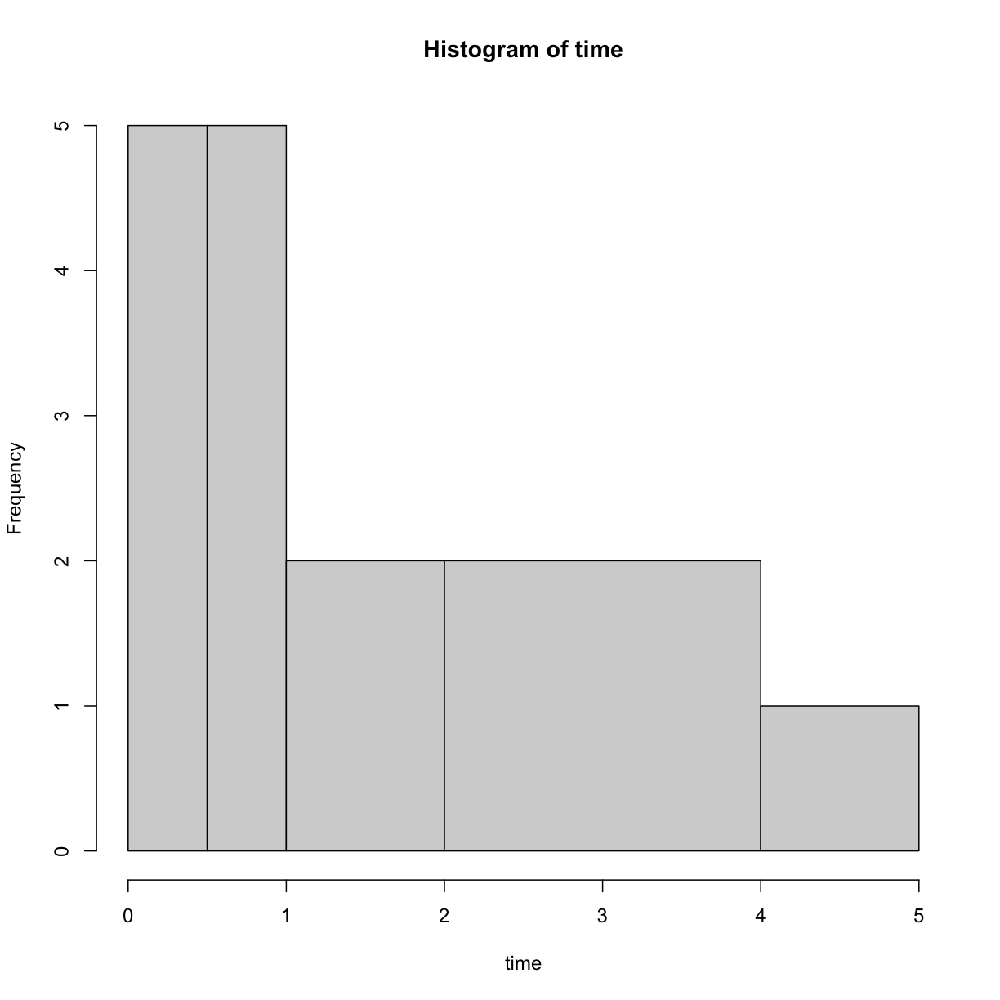
We get an error telling us that the areas are wrong, but we have to think about what that means for us \(\rightarrow\) do we actually care? Density is telling us the frequency over the unit time, but thats not what we really want \(\rightarrow\) we want counts with bars representing actual times.
Picking which one depends on your data & how you want to present it and you have to make sure to think about it.
Summary statistics for class data
Let’s look at some summary stats for our data for how long folks have been programming:
summary(time)
Min. 1st Qu. Median Mean 3rd Qu. Max.
0.250 0.250 0.750 1.233 1.500 4.500
Let’s over plot where these are on our histograms using another plotting function called abline that overplots lines on our plots:
hist(time,breaks=c(0.0,0.5,1,2,4,5),freq=TRUE)
abline(v = mean(time), col = "blue", lwd = 2)
abline(v = median(time), col = "red", lwd = 2)
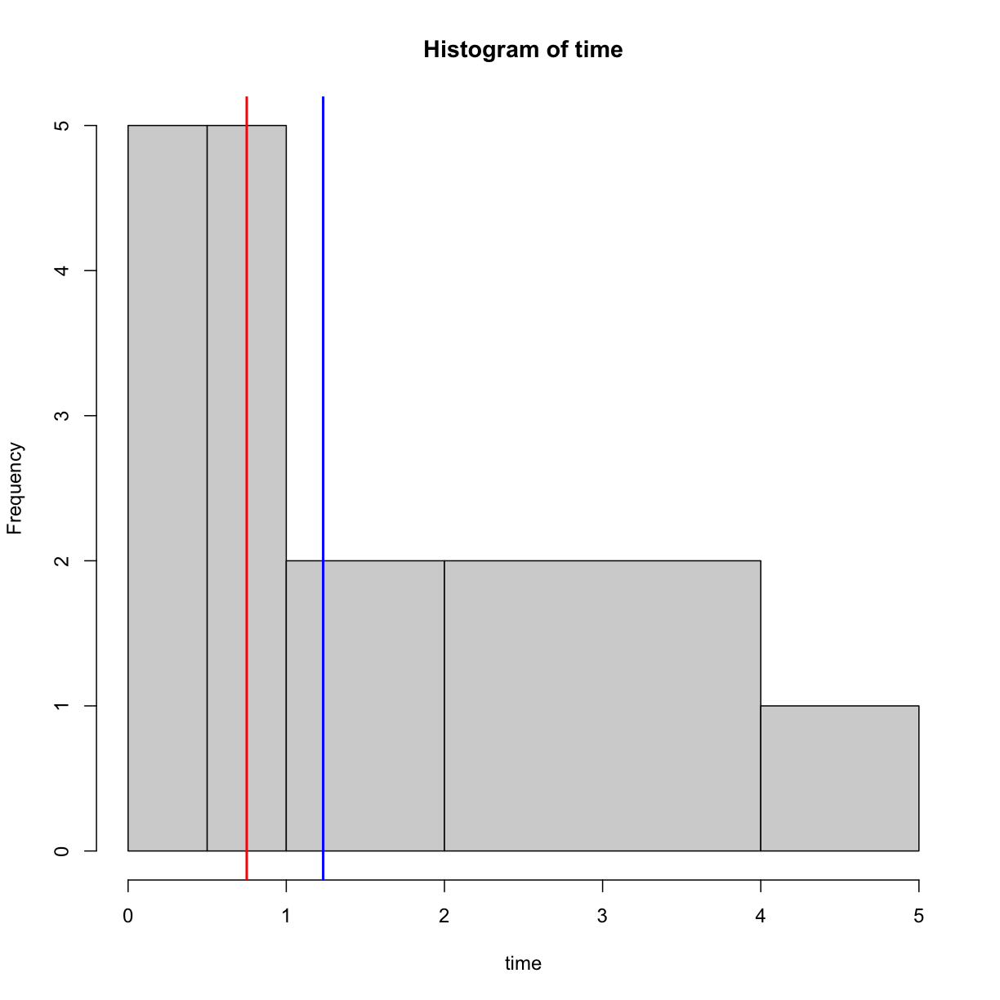
Let’s also add a legend:
hist(time,breaks=c(0.0,0.5,1,2,4,5),freq=TRUE)
abline(v = mean(time), col = "blue", lwd = 2)
abline(v = median(time), col = "red", lwd = 2)
legend("topright",c("Mean","Median"),col=c("blue","red"),lwd=2)
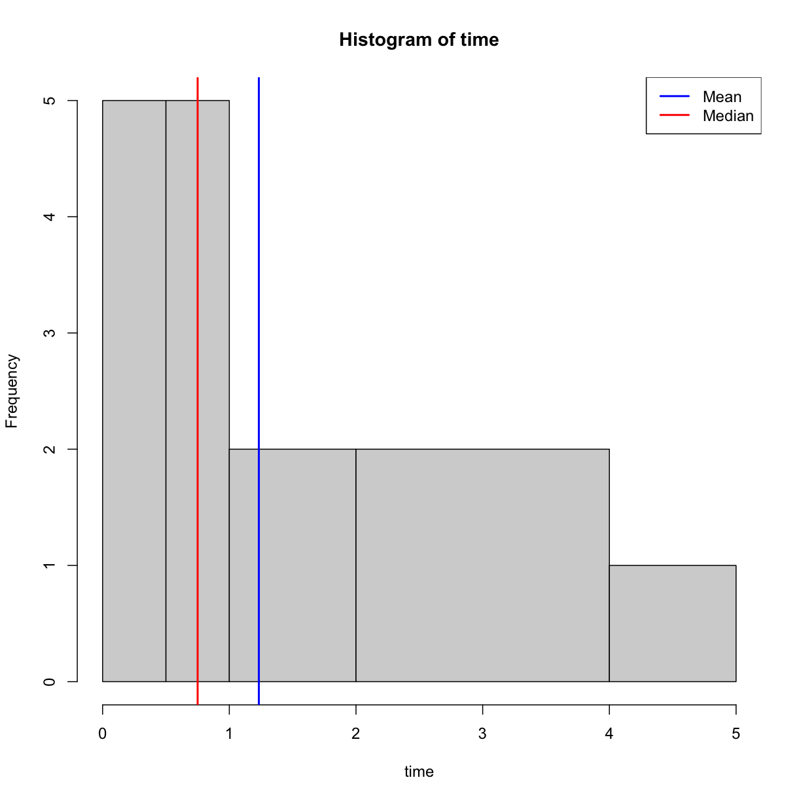
Something to think about - does the mean or median describe the distribution better here? What do they mean if the box sizes are different? Keep this thoughts with you over the next few classes.
Now let’s say we add the data of an old person in like myself that has been programming for a bit:
new_time = c(time,18.0)
Let’s overplot the mean and median of our new time on our old histogram:
# old plot
hist(time,breaks=c(0.0,0.5,1,2,4,5),freq=TRUE)
abline(v = mean(time), col = "blue", lwd = 2)
abline(v = median(time), col = "red", lwd = 2)
legend("topright",c("Mean","Median"),col=c("blue","red"),lwd=2)
# new additions
abline(v=mean(new_time),col="blue",lwd=4,lty=2)
abline(v=median(new_time),col="red",lwd=4,lty=2)
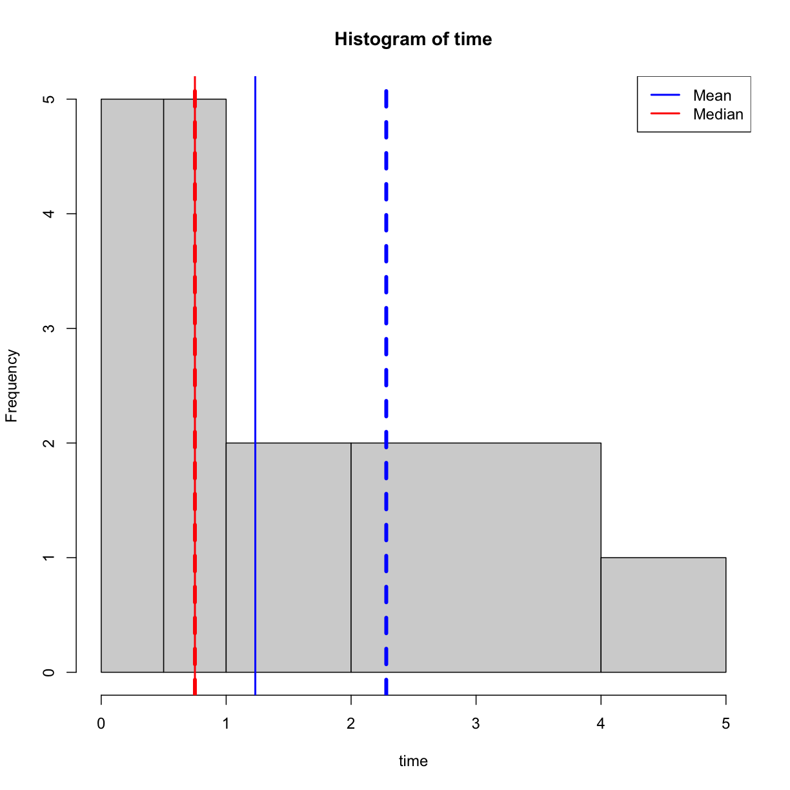
We see that the mean changes a lot, BUT the median does not $\rightarrow$ this is very interesting to think about when we want to characterize our data.
Let’s try the same exercise with the standdard deviation and the interquartile range (IQR). This time we’ll try making some lines on our plot using the lines function instead of abline for some variety, first with our original dataset:
hist(time,breaks=c(0.0,0.5,1,2,4,5),freq=TRUE)
# Usually (and later on in class) we'll talk about full STDDEV's around the mean,
# but 1/2 STDDEV is a little easier to see here
lines(c(mean(time)-0.5*sd(time),mean(time)+0.5*sd(time)),c(2,2), col="blue",lwd=2)
# lets add the 25th & 75th quantiles
lines(c(median(time)-0.5*IQR(time),median(time)+0.5*IQR(time)), c(1.5,1.5), col="red",lwd=2)
# again, lets add a little legend
legend("topright",c("STDDEV","Quartiles"),col=c("blue","red"),lwd=2)
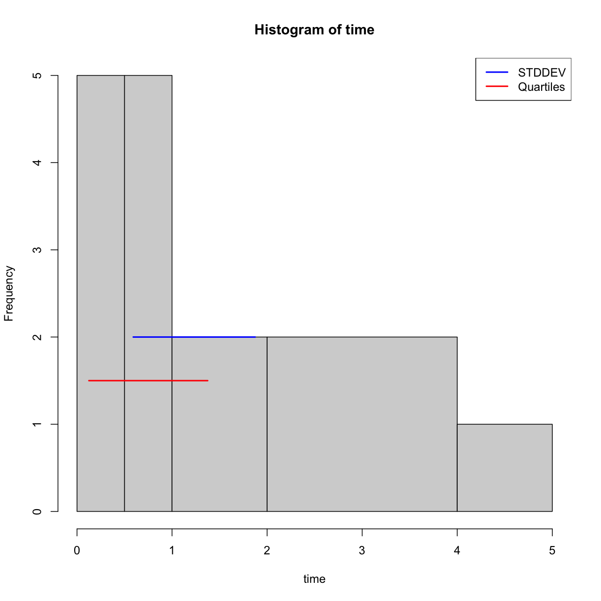
And let’s see how both of these change with adding my data point:
# Old plot
hist(time,breaks=c(0.0,0.5,1,2,4,5),freq=TRUE)
lines(c(mean(time)-0.5*sd(time),mean(time)+0.5*sd(time)),c(2,2), col="blue",lwd=2)
lines(c(median(time)-0.5*IQR(time),median(time)+0.5*IQR(time)), c(1.5,1.5), col="red",lwd=2)
legend("topright",c("STDDEV","Quartiles"),col=c("blue","red"),lwd=2)
# new points
lines(c(mean(new_time)-0.5*sd(new_time),mean(new_time)+0.5*sd(new_time)),
c(2,2), col="blue",lwd=4, lty=2)
lines(c(median(new_time)-0.5*IQR(new_time),median(new_time)+0.5*IQR(new_time)),
c(1.5,1.5), col="red",lwd=2,lty=2)
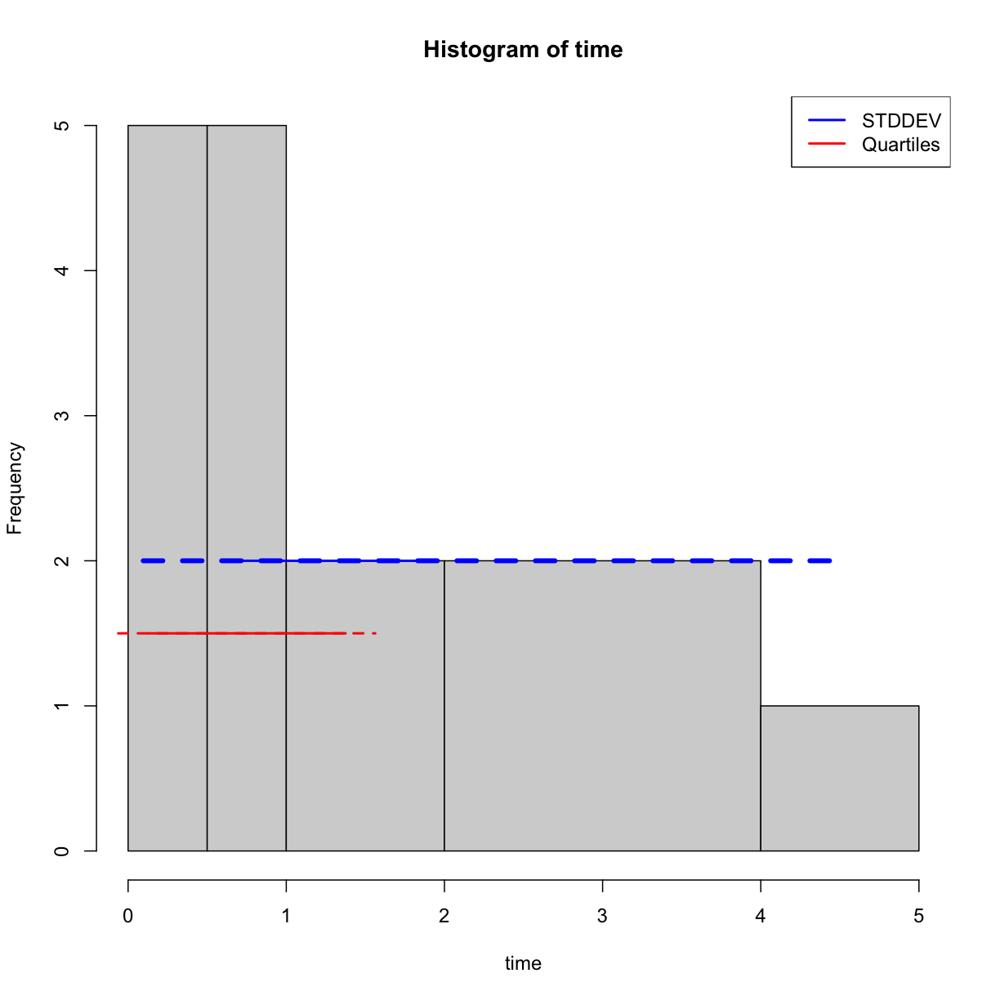
So, we also see that while the standdard deviation changes a lot with new and very different data, the quantiles do not (as much) – also something interesting to consider in characterizing data!
A few more things we can do with data
In RStudio, there a few helpful things you can try, like:
View(classData)
Or double clicking on “classData” in the “Global Environment” panel.
We can make a dotchart of the programming time range:
dotchart(time,xlab="Programming Age")
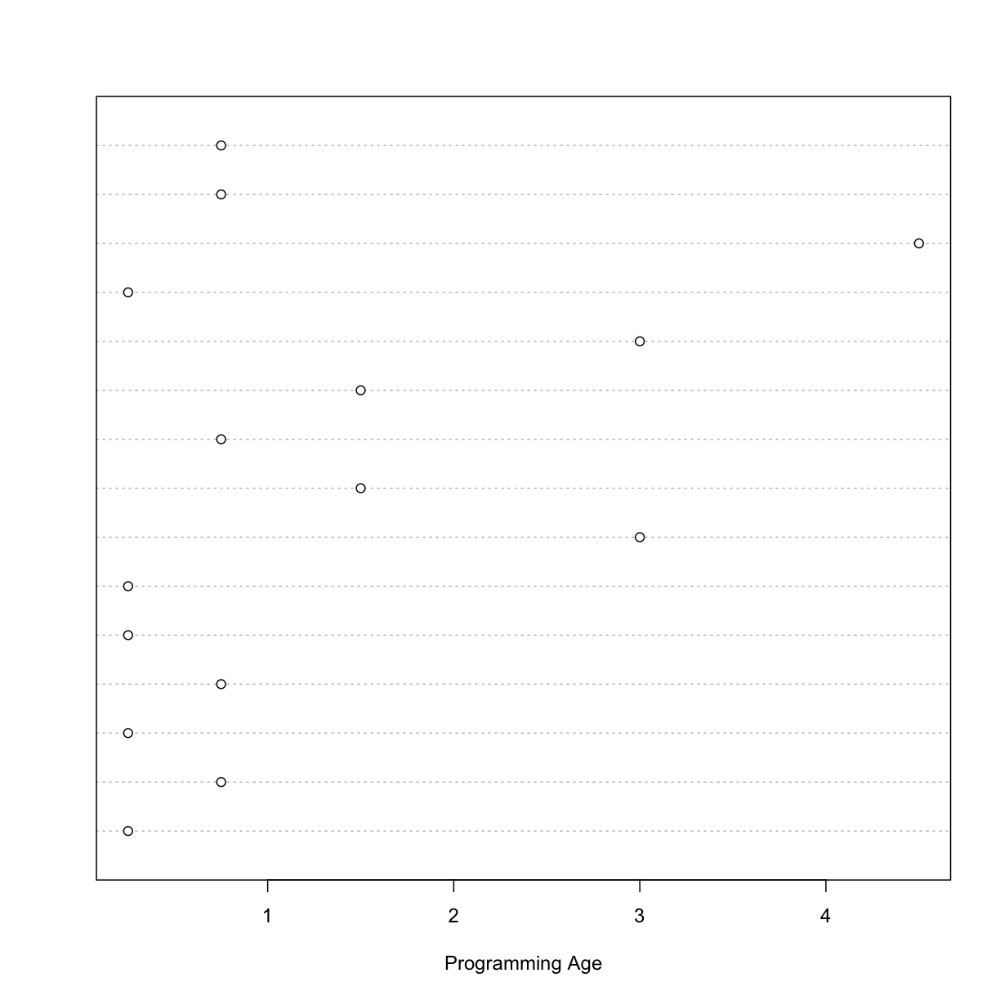 We can sort of see that there are a lot of dots $\lesssim$ 1 year, and a few at 3 years.
Note here: y-axis means nothing for dotcharts.
Can also see that in a boxplot:
boxplot(time)
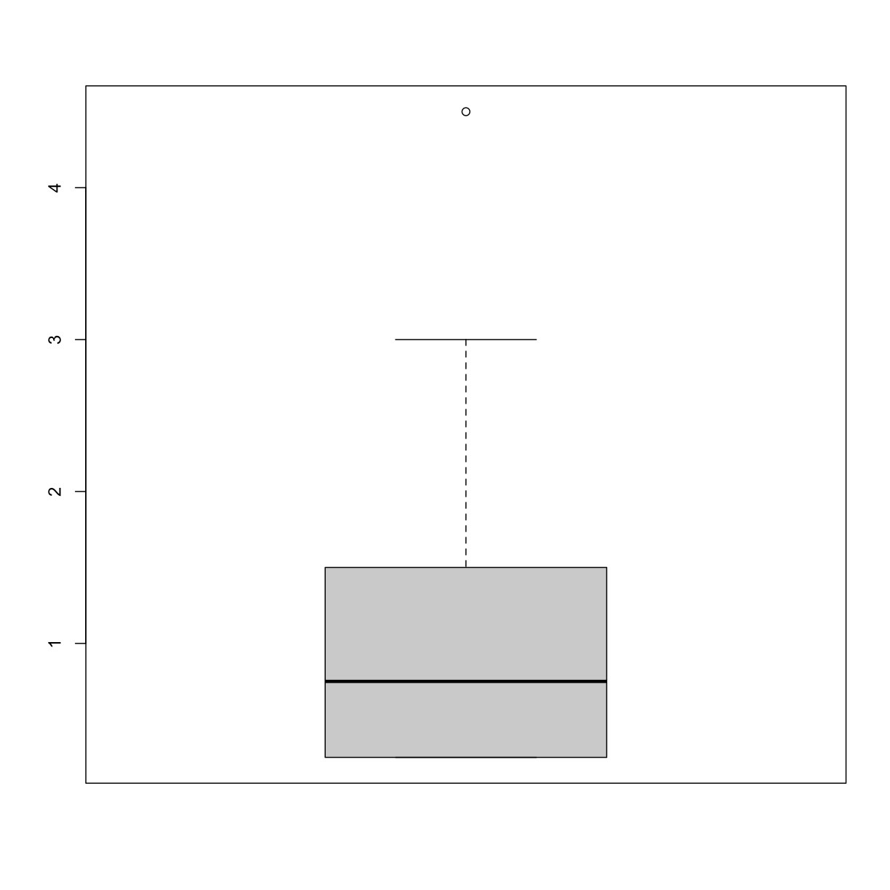
Note: we would usually have whiskers at the tops and bottoms but this can be different for different distributions.
Maybe lets remind ourselves of what we are plotting:
boxplot(time,ylab="Programming Age")
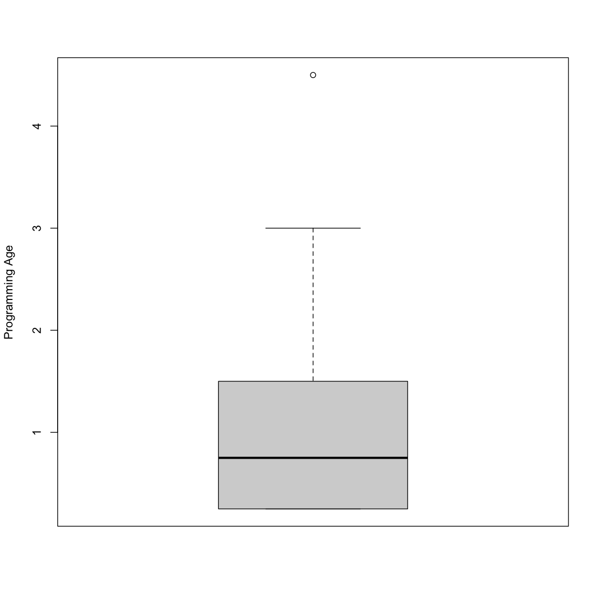
For this last one, lets also overlay the boxplot for newtime too:
boxplot(time,new_time, col=c("green","purple"))
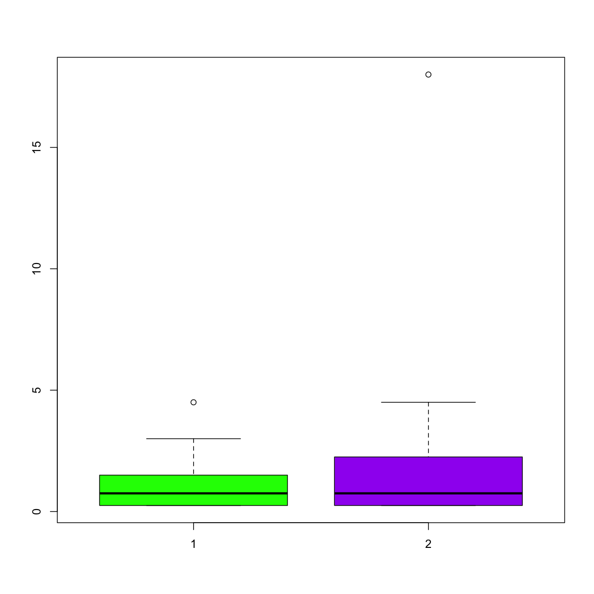 … and lets add a little legend too:
boxplot(time,new_time, col=c("green","purple"))
legend("topleft",c("Programming Age","New Programming Age"),fill=c("green","purple"))
Now we can see that again - the boxplots don’t change a huge amount, only the new age one now includes an outlier point for my old-person programming age.
There are also a bunch of parameters you can change with boxplots we aren’t going to get into here.
Key Points
TBD